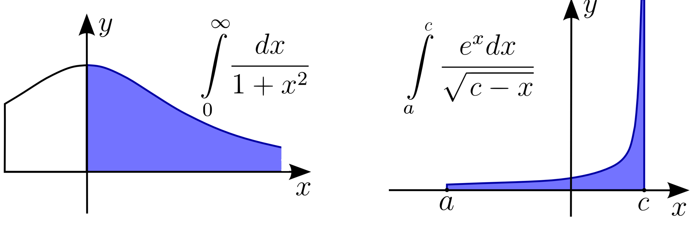

Mis teeb integraalist päratu integraali?
Integraal on päratu, kui üks või mõlemad tema radadest on lõpmata suured, või kui integraalialune funktsioon ise on mingis punktis määramata, sest lähenedes sellele punktile keskelt on funktsiooni piirväärtus sellel kohal kas lõpmatult suur või väike.

https://upload.wikimedia.org/wikipedia/commons/d/d1/Improperintegral2.png
https://upload.wikimedia.org/wikipedia/commons/e/ed/Improperintegral1.png
Esimesel integraalil on üks radadest lõpmatu, teisel aga radade vahel leidub lõpmata suur funktsiooni väärtus.
{kind=link}
{kind=link}
Piirväärtuse abil lahendamine
Lahendus toetub piirväärtuse kasutusele, kus siis lõpmata raja või radade puhul asendatakse see suvalise reaalarvuga, ning võetakse piirväärtus nii, et see suvaline reaalarv läheneb positiivsele või negatiivsele lõpmatusele. Kui see reaalarv on ülemises rajas, siis talle lähenetakse piirväärtuses vasakult, ning alumise raja reaalarvule paremalt. Ülejäänud käib kõik nii nagu Integraalide vahelehes seletatud, tuleb vaid piirväärtus arvesse võtta.
Hajub või koondub
Nagu on võimalik, et piirväärtus tuleb lõpmata suur või üldsegi ei eksisteeri, siis ka osade funktsioonide pindalade puhul võib olla samat moodi. Nii esimest kui ka teist laadi päratute integraalide puhul ütleme siis, et see päratu integraal hajub. Kui aga piirväärtus päratul integraalil eksisteerib lõpliku suuruse näol, siis on selle funktsiooni pindala nendes radades leitav ja ütleme, et see päratu integraal koondub. Nii lihtne asi ongi, kui just piirväärtused ise raskust ei valmista.